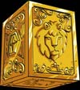
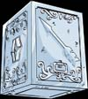
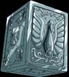

Atena
Deusa da Sabedoria
Atena, deusa da sabedoria, do amor e da guerra, foi encarregada por seu pai, Zeus, de proteger a humanidade e a própria Terra contra ameaças, junto de seus cavaleiros. A cada 200 anos, Atena renasce sob a forma de um corpo mortal.
Cosmo
Você já sentiu o cosmo?
Cosmo (小宇宙 Kosumo?, japonês para "microcosmo") é a força vital que existe em todos os seres vivos. Da queima do cosmo vem a cosmo-energia (コスモエネルギー kosumoenerugī?, da pronúncia inglesa "cosmoenergy") ou poder cósmico (コスモパワー kosumopawā?, da pronúncia inglesa "cosmopower"), que forma a aura (a parte visível da cosmo-energia) usada por guerreiros (cavaleiros, espectros etc.) em combate.
Ranking de Poder
A Classificação da Guarda de Atena
-

1º Lugar
| Cavaleiros de Ouro | -

2º Lugar
| Cavaleiros de Prata | -

3º Lugar
| Cavaleiros de Bronze |